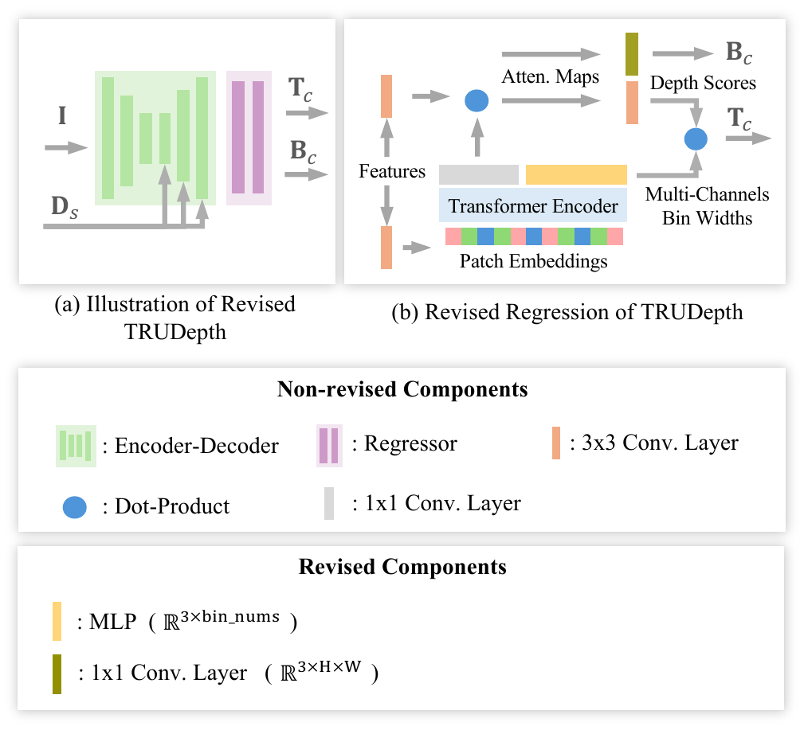

Parameters, network architecture, and dataset configuration
The table below lists all hyperparameters used in PGSPN. Values were determined empirically through validation set performance.
| Parameter | Description | Value |
|---|---|---|
| Training Configuration | ||
| Optimizer | Optimization algorithm | AdamW |
| Weight decay | L2 regularization coefficient | 10−2 |
| $\beta_1, \beta_2$ | Adam momentum parameters | 0.9, 0.999 |
| LR (Stage 1) | Learning rate for transmission estimation | $2 \times 10^{-4}$ |
| Batch size (Stage 1) | Batch size for transmission estimation | 5 |
| Epochs (Stage 1) | Training epochs for transmission estimation | 16 |
| LR (Stage 2) | Learning rate for depth completion | $3 \times 10^{-4}$ |
| Batch size (Stage 2) | Batch size for depth completion | 3 |
| Epochs (Stage 2) | Training epochs for depth completion | 8 |
| PGPS Module | ||
| $\tau_{\text{rel}}$ | Relative threshold for homogeneous region detection | 0.3 |
| $\lambda_{\text{PGPS}}$ | Decay rate controlling propagation suppression strength | 1.2 |
| Loss Function Weights | ||
| $\lambda_{\text{photo}}$ | Weight for photometric restoration loss | 12.0 |
| $\lambda_{\text{geo}}$ | Weight for geometric regularization loss | 25.0 |
| $\alpha$ | Balance between SSIM and $\ell_1$ loss in photometric loss | 0.7 |
| $\gamma$ | Exponential weighting factor for multi-scale depth loss | 0.7 |
| $N$ | Number of iterative refinement steps | 3 |
| Network Architecture | ||
| $K$ | Kernel size for deformable convolutional propagation | 3 |
For Stage 1 transmission estimation, we adapt TRUDepth with minimal modifications to predict per-channel transmission maps $\hat{\mathbf{T}}_c$ and ambient backscatter $\hat{\mathbf{B}}_c$. We preserve the entire original architecture—including the encoder-decoder, transformer encoder, patch embeddings, and regressor modules—modifying only two components:
(1) Multi-channel bin regression: We expand the MLP output dimension from $\mathbb{R}^{1 \times \text{bin\_nums}}$ to $\mathbb{R}^{3 \times \text{bin\_nums}}$, enabling independent bin width prediction for each color channel. This captures wavelength-dependent attenuation characteristics while preserving all other operations from AdaBins—bin edge computation, depth score generation via dot-product, and weighted combination for transmission estimation.
(2) Ambient light estimation: We add a single $1 \times 1$ convolutional layer that projects attention map features to 3-channel ambient light estimates $\hat{\mathbf{B}}_c \in \mathbb{R}^{3 \times H \times W}$, enabling photometric reconstruction.

Minimal modifications to TRUDepth for transmission estimation. (a) Overall architecture with inputs I (RGB) and Ds (sparse depth), outputting per-channel transmission $\hat{\mathbf{T}}_c$ and ambient light $\hat{\mathbf{B}}_c$. (b) Revised regression mechanism. Non-revised components remain unchanged. Revised: MLP output expansion to $\mathbb{R}^{3 \times \text{bin\_nums}}$ for multi-channel bin widths (yellow), and added $1 \times 1$ conv layer for ambient light (dark green).
We train and evaluate on FLSea-Stereo and FLSea-VI, which provide real underwater sequences captured at 10 Hz. FLSea-Stereo contains stereo image pairs at 1280×720, while FLSea-VI provides monocular sequences at 968×608, both with corresponding metric depth. All images are resized to 960×576 and evaluated within a depth range of 0–25 m.
| Dataset | FLSea-Stereo (Train/Test) | FLSea-VI (Train/Test) | SeaThru (Cross-val) | ||||||||
|---|---|---|---|---|---|---|---|---|---|---|---|
| Sequence | rock_garden1 | flatiron | cross_pyramid_loop | D3 | |||||||
| Sampling Type | SfM | Bias | Uniform | SfM | Bias | Uniform | SfM | Bias | Uniform | Bias | Uniform |
| Feature Num (#) | 1495 | 177 | 500 | 2747 | 177 | 500 | 2334 | 167 | 500 | 191 | 500 |
| OGR (%) | 32.47 | 14.99 | 40.2 | 63.37 | 22.82 | 52.74 | 56.12 | 19.35 | 50.28 | 14.9 | 36.21 |
| Difficulty | ★★★ | ★ | ★★ | ★★★ | |||||||
Difficulty ratings are based on OGR under height-constrained biased sampling using a 32×32 grid: ★★★ Hard (OGR ≤ 15%), ★★ Medium (15% < OGR ≤ 20%), ★ Easy (OGR > 20%).
Feature Matching: SIFT keypoints detected on calibrated stereo pairs, matched with Lowe's ratio test and cross-check verification, geometrically verified via essential matrix estimation with RANSAC. Includes reprojection error filtering, depth range constraints, and MAD-based outlier rejection.
SfM (Structure-from-Motion): 3D reconstruction is run on each sequence. Reconstructed 3D points are projected onto the image plane using the corresponding pose and intrinsics, and depth values are sampled from ground truth at projected locations.
Uniform Random Sampling: Given a fixed budget of $N$ samples, pixels are uniformly sampled at random from locations with available ground-truth depth.
Bias (Height-Constrained Sampling): Models sensors with a restricted field-of-view. Starting from a uniform random mask with $N{=}400$ samples, only points within a central band covering a specified percentage of the image height are retained:
This produces vertically biased sparse depth that concentrates measurements in the central region while leaving upper and lower areas unobserved.
We adopt a sequence-level protocol to prevent temporal leakage. Three sequences are reserved for testing (rock_garden1 from FLSea-Stereo, flatiron and cross_pyramid_loop from FLSea-VI), with the remaining 13 sequences as training data (~25k training, ~5k test images). Cross-validation on SeaThru D3 is performed without fine-tuning.
We identify the top 25% of image height as the candidate open-water region, detect the foreground boundary by finding the uppermost row with valid ground-truth depth for each column, then place a rectangular ROI of height $H_{\text{roi}}{=}60$ px immediately above this boundary. Boundary pixel pairs $(p_{\text{in}}, p_{\text{bd}})$ are sampled within a band of width $W_{\text{bd}}{=}5$ px along the foreground edge.